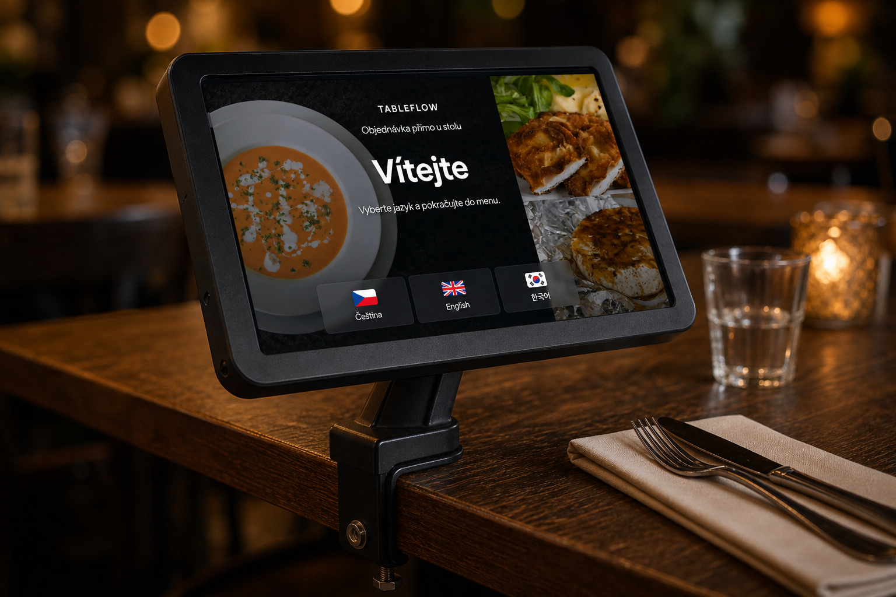

Tableflow
Objednávka přímo u stolu
Hosté si na tabletu sami prohlédnou menu a odešlou objednávku. Menu si Tableflow načte z vašeho stávajícího POS — kuchyně a platby zůstávají tam, kde už je máte.
Proč Tableflow
Víc stolů, stejný tým
Objednávku hosté vyřídí sami. Personál se věnuje servisu — ne běhání s blokem.
-
Rychlejší obsluha
Hosté začnou objednávat hned po usednutí, bez čekání na obsluhu.
-
Méně běhání
Méně zbytečných cest ke stolům kvůli zápisu objednávky nebo doplnění.
-
Hosté si objednají sami
Prohlédnou menu, upraví jídlo a odešlou objednávku přímo z tabletu u stolu.
Průběh
Tři kroky od stolu ke kuchyni
Bez aplikace v telefonu hosta. Tablet je u stolu, napojený na váš pokladní systém — menu se načte automaticky, objednávky se vrací zpět do POS.
-
Tablet u stolu
Každý stůl má svůj tablet — host začne objednávat hned, bez čekání na obsluhu.
-
Výběr a odeslání
Jazyky, alergeny, přílohy. Objednávka odchází jedním potvrzením.
-
Do pokladny
Kuchyně a účet běží ve vašem POS. Host může přivolat personál nebo požádat o účet.

Nejsme další pokladna
Tableflow doplňuje váš stávající POS. Objednávka od hosta jde do pokladního systému — kuchyně a platby zůstávají tam, kde je máte.
-
Přivolání personálu
Host přivolá obsluhu ze stolu, když potřebuje pomoct nebo doplnit něco mimo menu.
-
Žádost o účet
Účet si host vyžádá z tabletu — personál to vidí a vyřídí platbu v POS.
-
Objednávka v POS
Potvrzená objednávka se propíše do pokladny. Neměníte zavedený provoz kuchyně.
Zavedení
Od napojení po první stůl
Spuštění držíme jednoduché. Se vším vám rádi pomůžeme.
-
Napojení POS
Propojíme Tableflow s vaším pokladním systémem.
-
Načtení menu
Menu se načte ze stávající pokladny — nemusíte ho zakládat znovu.
-
Párování tabletů
Tablety přiřadíte ke stolům ve webové administraci.
-
Hotovo
Hosté mohou objednávat. Úpravy menu řešíte v POS nebo u nás.
Pro provozovny
Snadné nastavení, menu ze stávající pokladny
Tableflow si přečte menu z vašeho pokladního systému — nemusíte ho zakládat znovu. Úpravy pak děláte tam, kde vám to vyhovuje: přímo v POS, nebo u nás v administraci. Tablety, stoly i úvodní obrazovku nastavíte ve webu během chvilky. Se vším Vám rádi pomůžeme.
- Menu se načte ze stávajícího POS
- Úpravy položek v pokladně i v naší aplikaci
- Fotky, překlady a viditelnost jídel bez složitého nastavování
- Párování tabletů ke stolům a volání personálu ze stolu
Postaveno pro restaurace, které chtějí obsloužit více hostů bez navyšování personálu. Kompatibilní s moderními POS systémy.
Pro koho
Restaurace jsou různé
My se přizpůsobíme všem potřebám.
Ideální pro:
- Velké i malé restaurace — všude, kde chcete rychlejší obsluhu a spokojenější hosty
- Pivnice, bary, kavárny
- Burgery, kebab, palačinky a podobné street food — zkrátka všude, kde si zákazník může upravit jídlo přesně podle svých představ
V provozu
Tableflow už běží ostrý provoz
Aplikace, tablety u stolů i napojení na pokladní systém používáme v reálné restauraci — ne jen na prezentaci. Rádi ukážeme, jak to vypadá u vás.
FAQ
Časté otázky
Funguje to s naším POS?
Tableflow je stavěný na napojení na moderní pokladní systémy. Při ukázce ověříme, jestli sedí na vaši pokladnu, a navrhneme další krok.
Musíme zakládat menu znovu?
Ne. Menu si aplikace načte ze stávajícího POS. Úpravy pak děláte v pokladně, nebo u nás v administraci — podle toho, co vám vyhovuje.
Potřebují hosté stáhnout aplikaci?
Ne. Objednávají z tabletu u stolu. Nic neinstalují do telefonu.
Jak rychle to spustíme?
Typicky: napojení POS, načtení menu, párování tabletů ke stolům. Termín domluvíme podle vaší provozovny — se zavedením pomůžeme.
Máte zájem? Kontaktujte nás
Domluvíme krátkou ukázku — napojení na váš POS, načtení menu a nastavení tabletů u stolů.